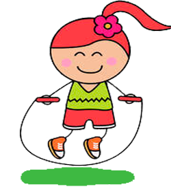

На главную
Скакалка

Скакалка - спортивный снаряд для выполнения физических упражнений для взрослых и для детей, в виде длинного шнура. Используется как один из спортивных снарядов в упражнениях по художественной гимнастике. Гимнастическая скакалка не имеет ручек, вместо них разрешается завязывать узел или обжигать края. Внешне похожа на верёвку. По данным опроса, проведенного Минздравсоцразвития России, самым популярным видом спорта среди россиян является прыжки со скакалкой.